Activity: Copy, rotate, move a sketch
Try this activity to learn how to:
-
Draw a sketch on a face.
-
Copy the sketch to another face.
-
Rotate and move the copied sketch.
Start Solid Edge.
On the File menu, click Open.
In the Open File dialog box, set the Look in: field to the folder where the training files reside.
Click sketch_C.par and then click Open.
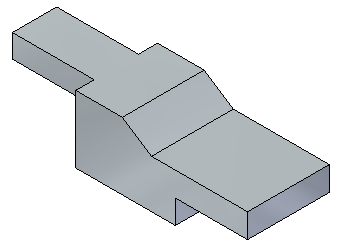
-
In PathFinder, click the eye for the sketch named slot.
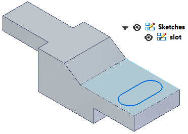
Select the sketch named slot in PathFinder.
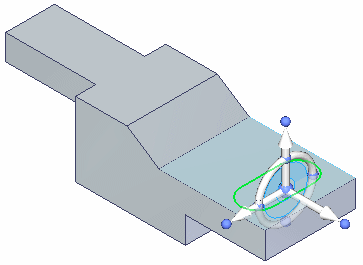
Press Ctrl+C to copy the selected sketch. The sketch is added to the clipboard.
Press Ctrl+V. The copied sketch attaches to the cursor. Hover over the face, and then click to place the sketch as shown. You will position the sketch next.
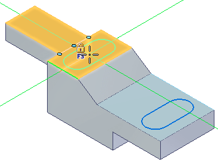
You can press the N or B keys to control the copied sketch orientation. However, in this activity, we will use the Rotate command to position the sketch.
Press the Esc key to end the paste operation.
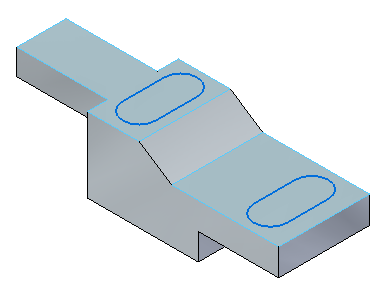
In PathFinder, right-click the copied sketch and choose Lock Sketch Plane from the shortcut menu.
Choose the Sketch View command (or press Ctrl+H).
On the Move command list, choose the Rotate command.
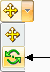
On command bar, make sure the Copy option is not on.
While holding down the Ctrl key, click the two lines and two arcs. The elements turn green as they are selected.
Select the arc center as center of rotation.
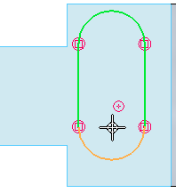
Select the other arc center as the start point for rotation.
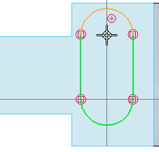
Click when the horizontal indicator appears. This rotates the sketch 90°.
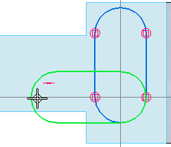
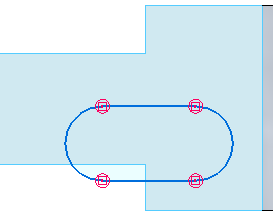
Select the four elements again.
Choose the Move command.
For the move-from point, select the center of an arc.
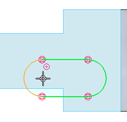
For the to point, move the cursor over the midpoint of the top edge. The sketch will be centered to this point. Do not click.
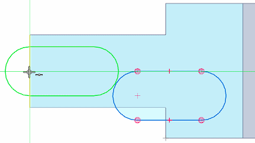
While maintaining midpoint alignment display, move the cursor down to the location shown and click.
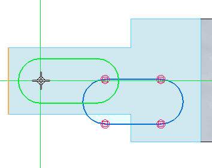
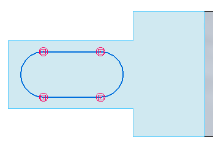
Press Ctrl+I.
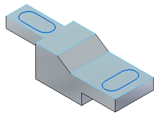
The activity is complete. Close the file and do not save.
In this activity you drew a sketch on face and learned how to copy the sketch to another face. You also learned how to rotate and move a sketch.